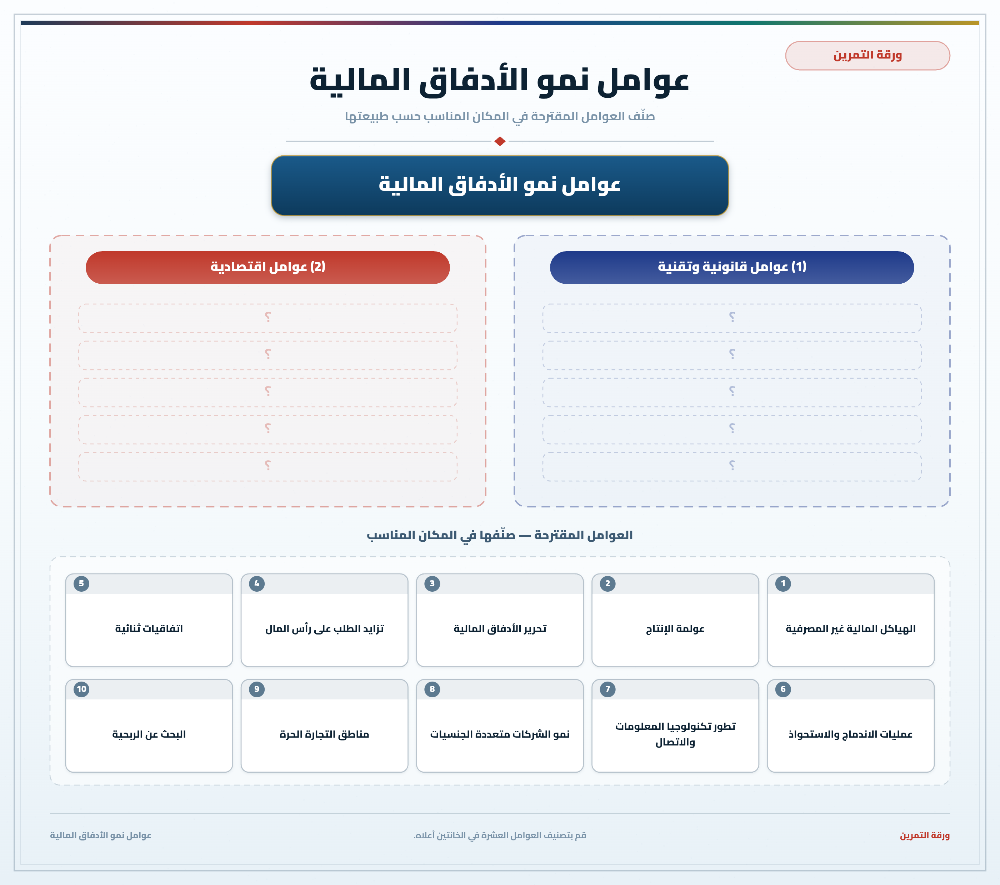
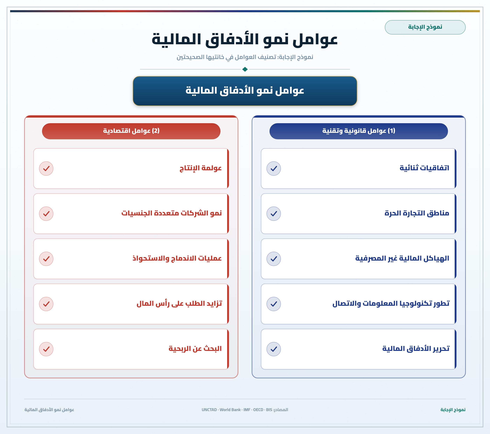

تمارين – الأدفاق المالية: العوامل
- إدماج وشراء الشركات:
- عملية مالية تتمثل في انصهار شركتين ينتج عنها تكون شركة جديدة عملاقة، أو في شراء شركة لمجموع الأصول المالية وديون شركة ثانية مما يؤدي إلى زوال الشركة المشتراة.
- صناديق توظيف المال:
- هياكل مالية غير بنكية تجمع مدخرات المستثمرين وتوظفها في الأسواق المالية.
- الدفع الإلكتروني:
- خدمات مالية حديثة تسمح بإجراء المعاملات المالية عبر الإنترنت والوسائل الإلكترونية.
- الأزمة المالية العالمية 2008:
- أزمة مالية كبرى انطلقت من الولايات المتحدة بعد انهيار سوق الرهن العقاري، وامتدت إلى العالم وكشفت هشاشة النظام المالي المعولم.
| السنة | 1990 | 2000 | 2010 | 2018 | 2020 | 2022 |
|---|---|---|---|---|---|---|
| عدد عمليات الإدماج والشراء (بعملية) | 2400 | 4500 | 5500 | 6800 | 7763 | 8000 |
المصدر: تقارير الأونكتاد حول الاستثمار العالمي


تنقسم عوامل نمو الأدفاق المالية إلى مجموعتين: عوامل قانونية وتقنية تتمثل في إسقاط الحواجز المعرقلة لحركة رؤوس الأموال، إبرام الاتفاقيات الثنائية، ظهور هياكل مالية غير بنكية وتطور تكنولوجيات الاتصال. أما العوامل الاقتصادية فترتبط بعولمة الإنتاج، تزايد عدد الشركات عبر القطرية وعمليات الإدماج والشراء، وتزايد الطلب على رؤوس الأموال في مختلف بلدان العالم.
- مقدمة: الشركات عبر القطرية ومحرك الأدفاق المالية.
- تطوير: أولاً. عولمة الإنتاج وتجزئة مراحل الإنتاج؛ ثانياً. تطور عدد الشركات عبر القطرية وعمليات الإدماج والشراء؛ ثالثاً. ضخامة القيمة المالية لهذه العمليات.
- خاتمة: دور محوري للشركات عبر القطرية في تحريك رؤوس الأموال.
مقدمة
تُعد الشركات عبر القطرية الفاعل الرئيسي في نمو الأدفاق المالية العالمية بفضل عولمة الإنتاج وتوسعها في الأسواق الخارجية.
تطوير
أولاً. عولمة الإنتاج
تسعى الشركات عبر القطرية إلى تجزئة عملية إنتاجها وتدويلها بنشر فروعها في العالم، مما كثّف الأدفاق المالية المرتبطة بالاستثمار الأجنبي المباشر.
ثانياً. تطور عمليات الإدماج والشراء
يناهز عدد الشركات عبر القطرية 55 ألف شركة، وتضاعف عدد عمليات الإدماج والشراء أكثر من 3 مرات منذ 1990 ليبلغ حوالي 8000 عملية سنة 2020 (7763 عملية).
ثالثاً. ضخامة القيمة المالية
بلغت قيمة عمليات الإدماج والشراء 706.5 مليار دولار سنة 2022 مقارنة بـ 98 مليار دولار سنة 1990، مما يعكس ضخامة الأدفاق المالية الناتجة عنها.
خاتمة
هكذا تلعب الشركات عبر القطرية دوراً محورياً في تحريك رؤوس الأموال على المستوى العالمي وتنمية الأدفاق المالية.
الخط الزمني: 1944: بريتون وودز ...